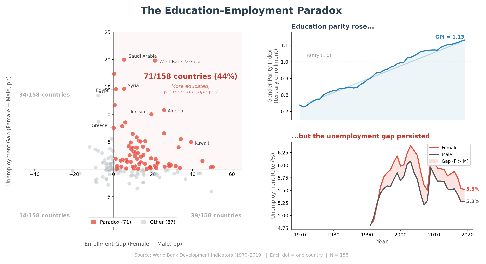
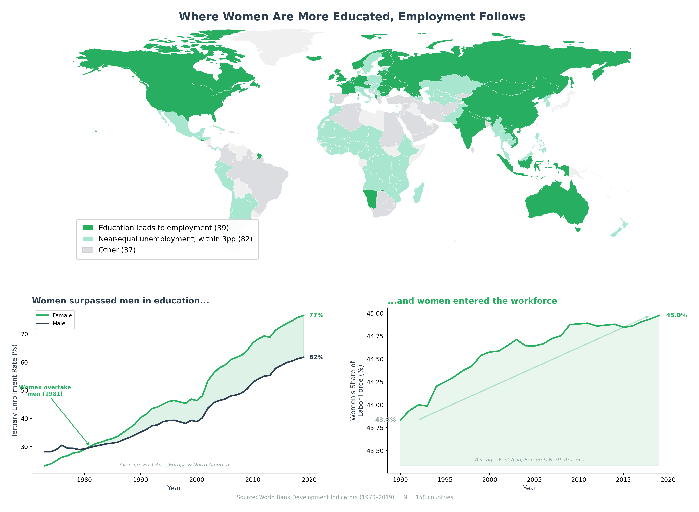

Proposition: "Women's gains in higher education have failed to close the gender employment gap."
FOR the Proposition

Design Decisions and Rationale:
- [Score: -1] Dimming non-paradox countries in the scatter plot. Countries outside the "paradox zone" (upper-right quadrant) are rendered smaller and more transparent, while paradox countries are larger and more vivid. This makes the 45% figure feel more dominant than it is, since nearly half the data points fade into the background. The reader ends up seeing the paradox as the norm rather than one of several patterns. I tried treating all points equally but the paradox became much less visually striking.
- [Score: -1.5] Bold red callout: "71/158 countries (44%) - More educated, yet more unemployed." This annotation in the upper-right quadrant frames a statistical observation as an alarming finding. The phrase "more educated, yet more unemployed" suggests something is broken, when there are many structural, cultural, and economic reasons the relationship between education and employment isn't 1:1. The bold percentage and italic subtitle act as an anchor: once the reader sees it, they read the entire chart through that lens. A more neutral label like "Female enrollment > male, Female unemployment > male" would have been fairer but far less persuasive.
- [Score: 1] Including the dual-axis time series (GPI vs. unemployment gap). This inset honestly shows that while tertiary enrollment gender parity has improved globally, the unemployment gap has persisted. The data is accurately represented, but the juxtaposition is persuasive: it implies that rising education parity should have closed the unemployment gap, which is reasonable but debatable. The dual-axis design is earnest in that it transparently shows both trends.
- [Score: -0.5] Selective country annotations highlighting extreme cases. Labeling only the most dramatic outliers (Saudi Arabia, West Bank & Gaza, Egypt, Syria, Tunisia, Algeria) draws the eye to countries with the largest gaps. These are mostly MENA nations with cultural and legal barriers to women's employment that exist independently of education levels. Showing only these extreme cases without context makes the "failure" of education seem more universal, as if these outliers represent the broader pattern rather than a regional one.
- [Score: 1.5] Sourcing and axis labels are transparent. All axes are clearly labeled, the data source is cited, and the scatter plot uses a straightforward encoding (gap vs. gap). The reader can verify the claim by examining individual data points. This builds trust, which in turn makes the more persuasive elements harder to spot.
AGAINST the Proposition

Design Decisions and Rationale:
- [Score: -1.5] Choropleth map exploiting land area as a visual proxy for prevalence. The map is the hero chart because countries like Russia, Canada, China, Australia, and the USA, which happen to have huge land areas, are all colored green ("education leads to employment"). This makes green visually dominate the map, giving the impression that most of the world shows no paradox. In reality, these are just 39 out of 158 countries, but they cover most of the map's surface. The Middle East and North Africa "paradox" countries, despite being 29 nations, occupy a tiny visual footprint. This is the most deceptive choice: technically accurate (each country is correctly classified) but perceptually misleading because land area does not equal country count or population.
- [Score: -1] Merging "paradox" countries into the same gray as "other." By giving paradox countries the same color as countries with less female education or no data, the visualization makes them invisible. The legend has only three categories (green, light green, and gray) with no separate label for "paradox." The reader cannot identify which gray countries have the paradox pattern without cross-referencing external data. This omission-by-design quietly suppresses counter-evidence.
- [Score: -0.5] Selectively averaging only "green" regions for the time series. The bottom panels show enrollment crossover and labor force participation averaged across East Asia, Europe, and North America only, i.e., the regions that support the argument. Including Middle East and North Africa or the global average would tell a different story. The footnote mentions this in small italic text, but the chart titles ("Women surpassed men in education...") don't qualify this as a regional subset, implying it's a universal trend.
- [Score: -0.5] Tight y-axis on the labor force chart. The right panel shows women's share of the labor force rising from 43.8% to 44.9%, a real but modest 1.1 percentage point increase over 30 years. By auto-scaling the y-axis tightly, the line appears to climb steeply, making the change look more dramatic than it is. A y-axis starting at 0% would show a nearly flat line.
- [Score: 1.5] Transparent sourcing and accurate data representation. All data is from the World Bank, the classification criteria are stated in the legend, and no data points are fabricated or axes reversed. The enrollment crossover chart accurately shows female enrollment surpassing male enrollment. This honest foundation makes the persuasive framing choices harder to spot.
Final Reflection
Making two opposing visualizations from the same dataset taught me a lot about how design choices shape the story data tells. What surprised me most was that I rarely needed outright deception like truncating axes or fabricating data. The most powerful persuasive tools turned out to be selection (which data points to emphasize), framing (how to label and annotate findings), and structure (which chart goes where and how large it is). The "for" visualization is built on genuine data (45% of countries really do show this paradox), but by dimming the other 55% and labeling the pattern dramatically, the exception starts to look like the rule. The "against" visualization uses entirely real progress metrics but avoids mentioning the countries where education gains haven't translated to employment equality.
I now think of "ethical visualization" less as a binary between honest and dishonest, and more as a spectrum of emphasis and omission. The most misleading visualizations aren't the ones with obviously distorted charts; they're the technically accurate ones that tell only half the story through selective framing. The line I'd draw is: an "acceptable" persuasive choice makes a genuine pattern in the data more visible, while a "misleading" one hides contradictory evidence or implies causation the data doesn't support. Both of my visualizations cross this line to some degree. The "for" version implies education should directly fix unemployment (ignoring confounding factors), and the "against" version implies progress in enrollment parity means the problem is mostly solved (ignoring persistent gaps). Going through this process has made me more skeptical of visualizations I encounter, since the most effective persuasion often hides in design choices we don't consciously notice.